Bacon
Hi, I'm Bacon!

About Bacon
Bacon Q. Dog is a 9yr old labradoodle. He prefers to spend his days lounging among the three different beds/couches that his family has gifted him. He enjoys a walk or two around the neighborhood, as long as he can pretend that he doesn't see any of the other animals to avoid the embarrassment of not wanting to admit he has no wolf-like skills in chasing them.
At night just as the rest of the family is ready to relax, Bacon suddenly wants to release all of his energy. He will place his toys on a mini couch and frantically drag the couch around, giving his toys "a ride." There is also a lot of rolling. Lots and lots of rolling.
Photo Gallery


Likes
- Belly rubs
- Playing tug-of-war
- Sneaking onto the couch
Padfoot
Hi, I'm Padfoot!
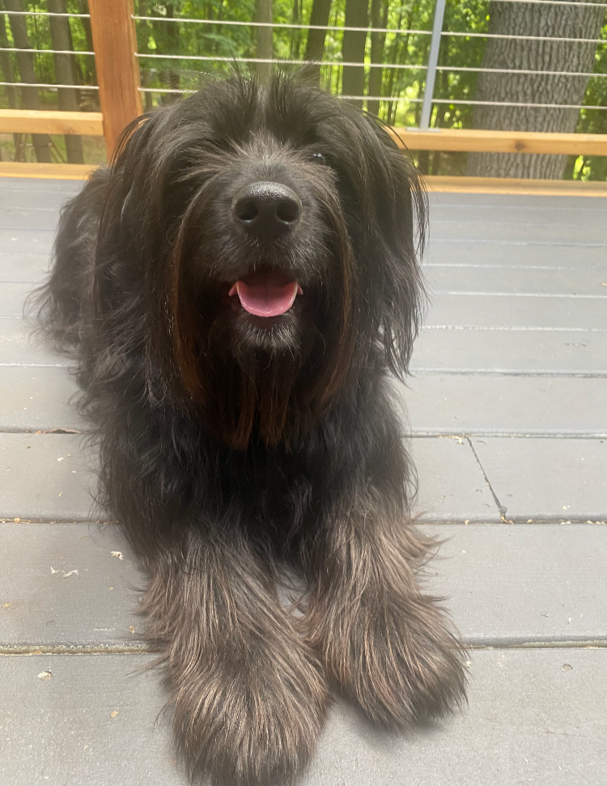About Padfoot
Padfoot is a 4 year old big shaggy black dog. He is a mutt. He loves to run around the yard but is scared of little dogs, including his older, much littler sister Peaches.
He loves to meet new people and will give you a big hug and kiss when he meets you. He is named after Padfoot in Harry Potter.
Photo Gallery
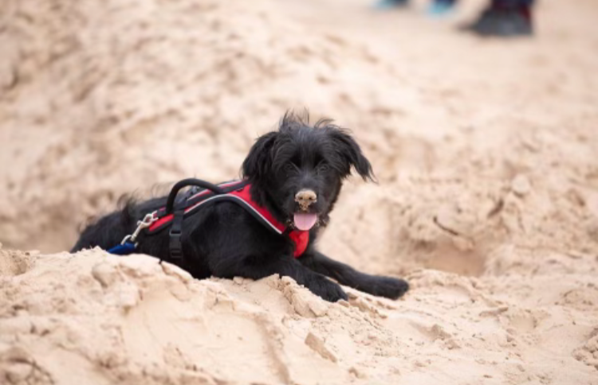
Likes
- Playing with his toys
- Getting attention
- Cuddling
Sasha
Hi, I'm Sasha!
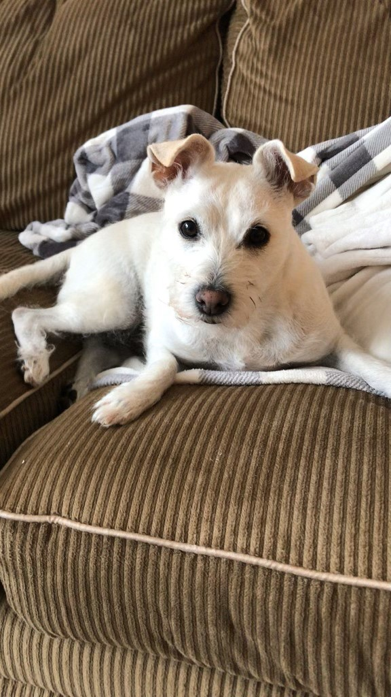About Sasha
Sasha is a little white terrier. He is very energetic and smart. He enjoys riding in cars and will always stick his head out the window.
He loves attention and will follow you around the house. His family thinks he is the cutest and smartest dog in the world.
Photo Gallery
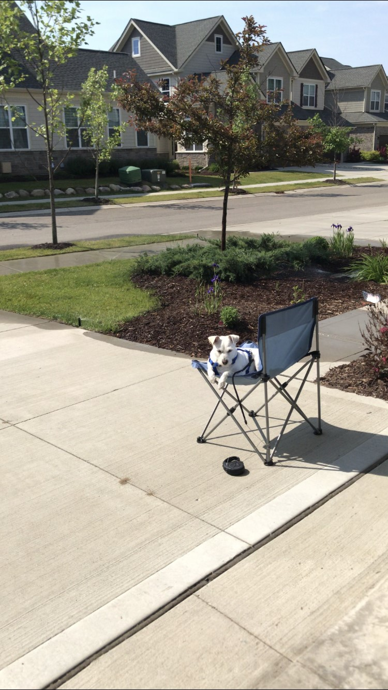 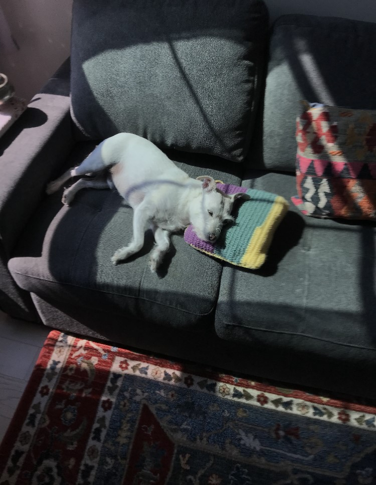 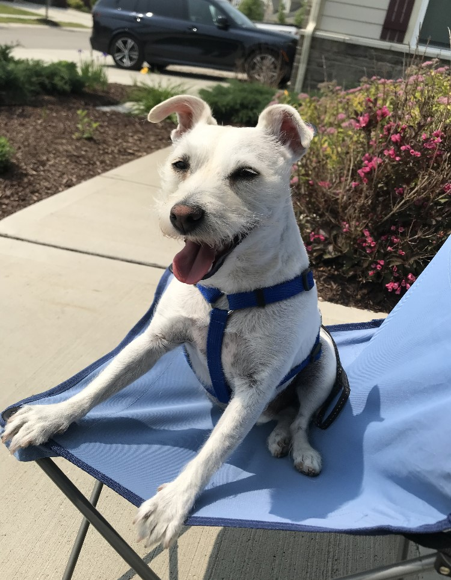 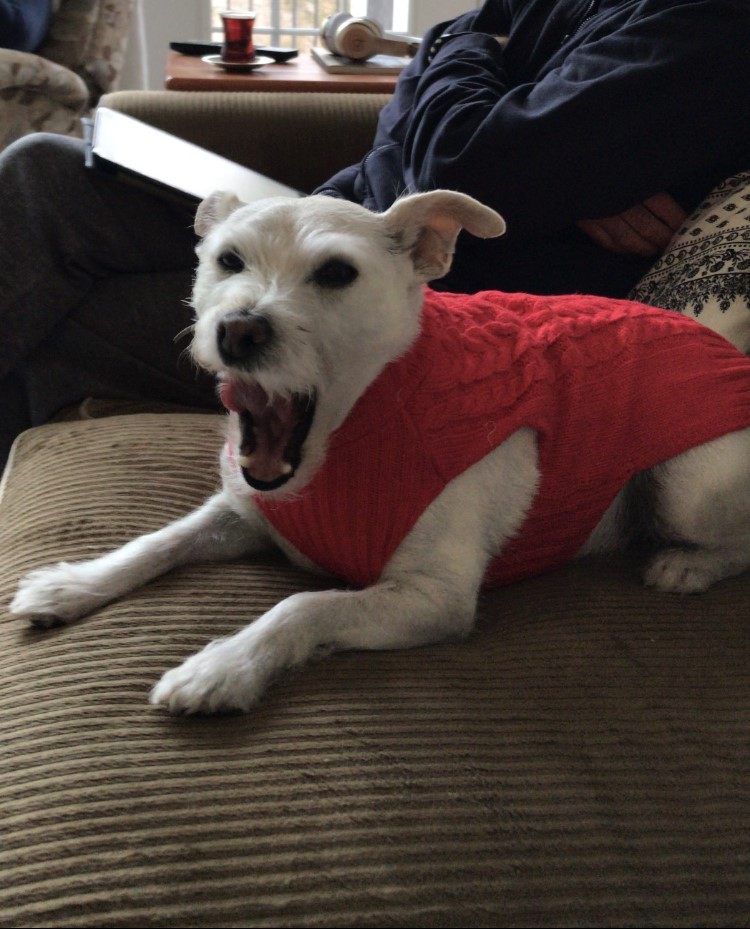Likes
- Sitting in laps
- Barking at other dogs
- Bones
Pepper
Hi, I'm Pepper!

About Pepper
Pepper is a 2 year old black cat. She is very energetic and loves to play. She is always excited to chew on objects around the house, but is never interested in her real toys.
She loves to cuddle and will always sleep on your lap once she gets to know you. She is very shy at first and will only spend time with you after getting to know you.
Photo Gallery
 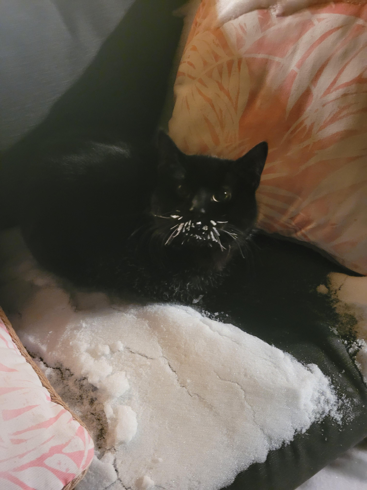
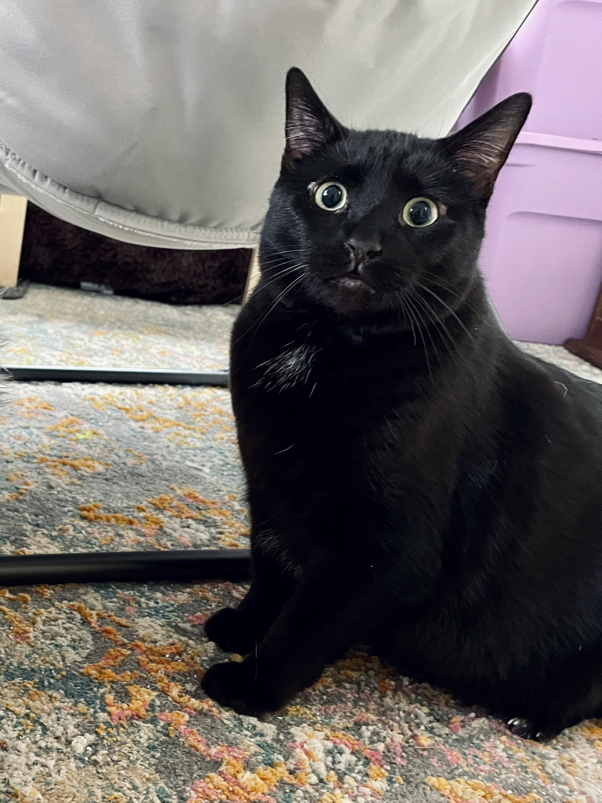
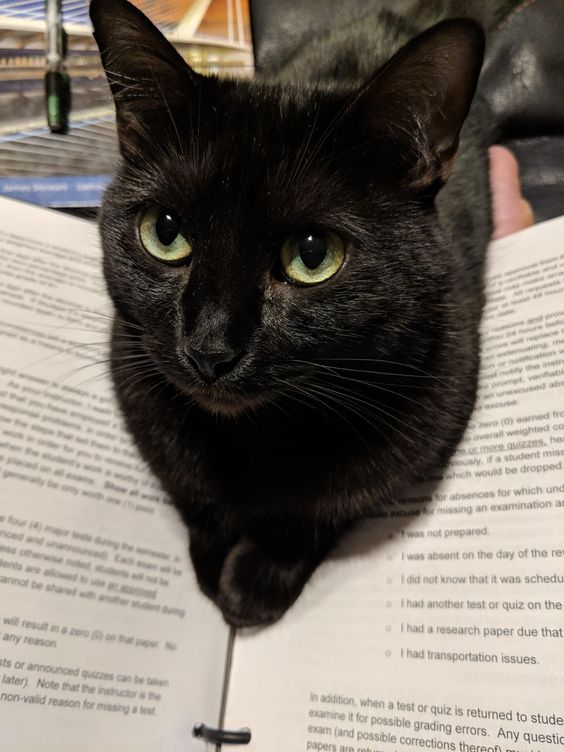
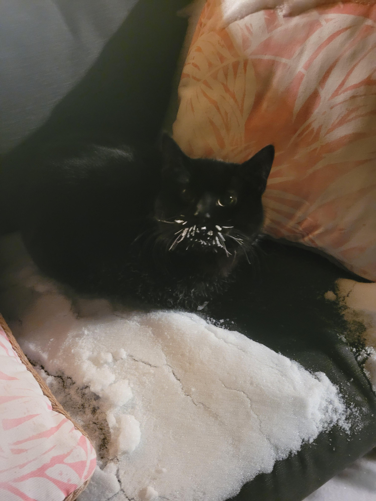
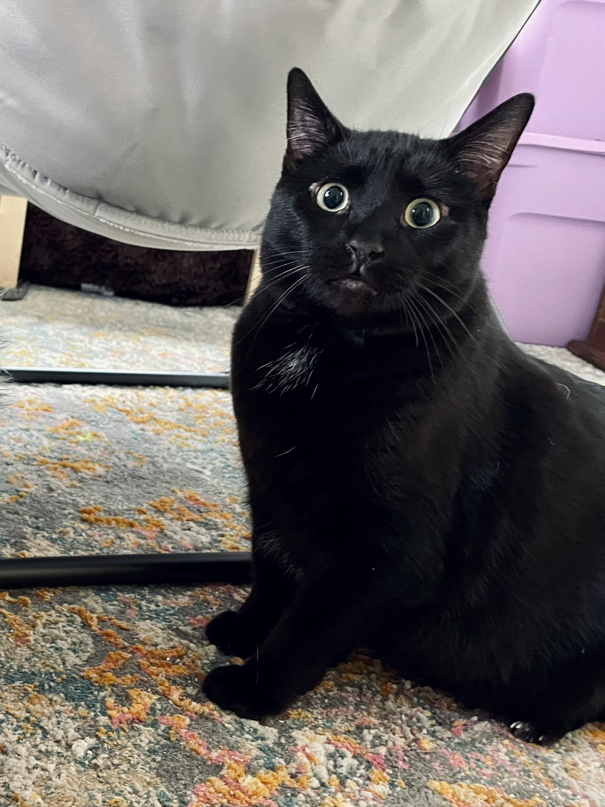
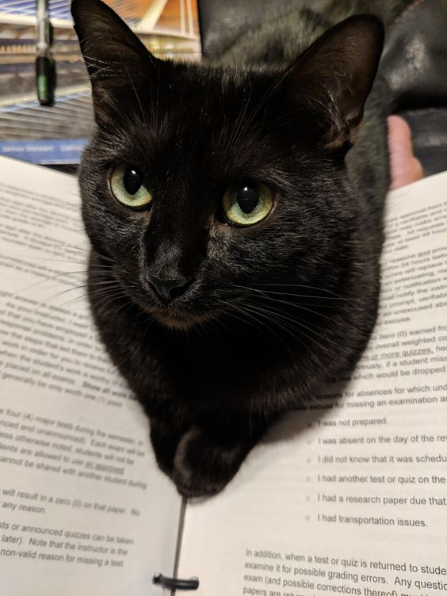
Likes
- Walking on open laptops
- Hiding in closets
- Running around in the middle of the night
Stella
Hi, I'm Stella!
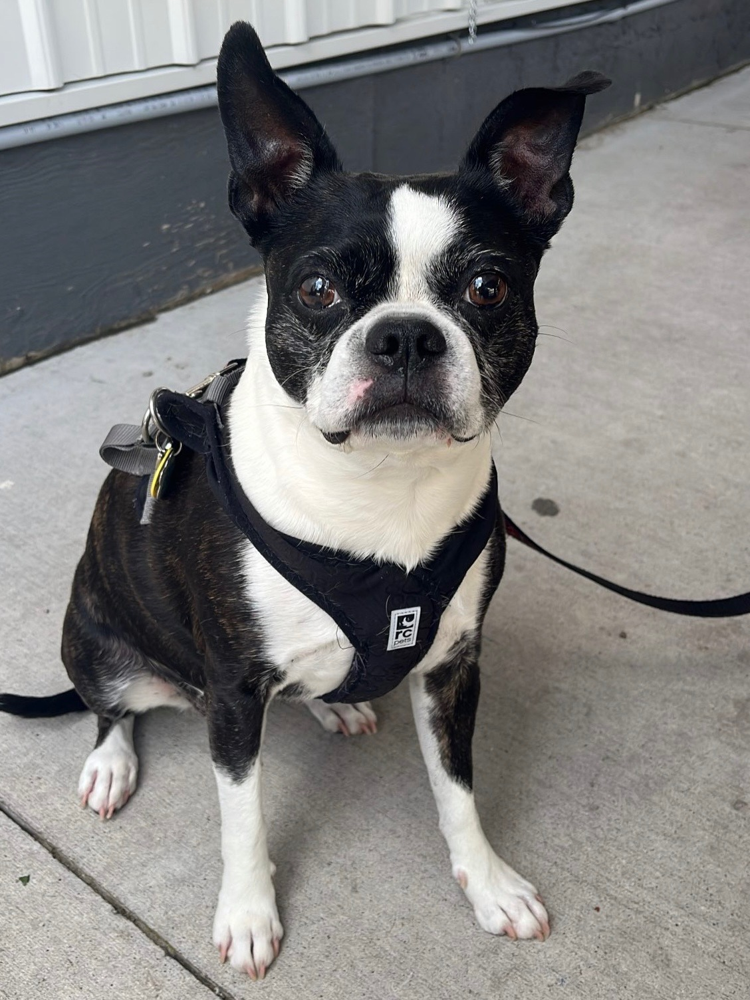About Stella
Stella is a Boston Terrier. She was adopted from Ohio and now lives in Canada.
She loves to play with her friends and go for walks. She is very energetic and loves to run around the house.
Photo Gallery
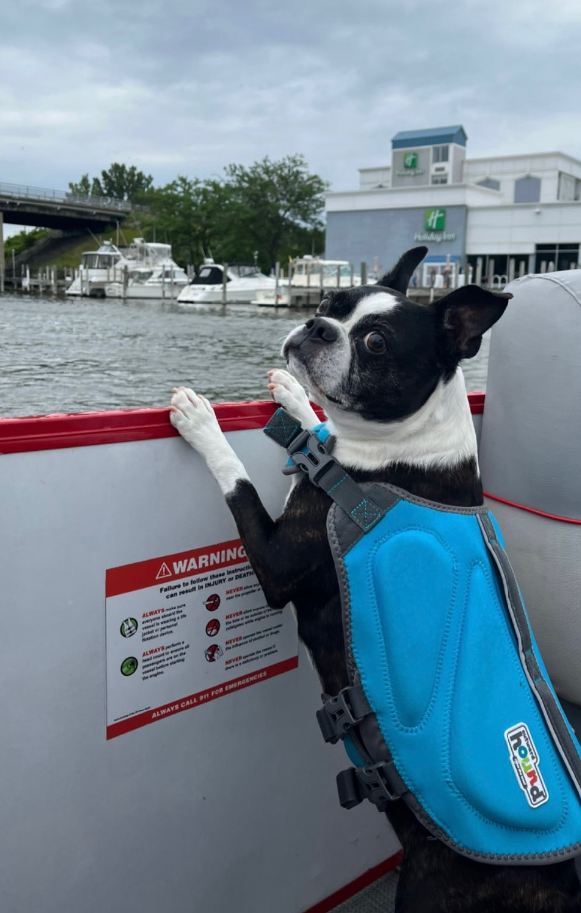


Likes
- Watching TV
- Posing for pictures
- Naps